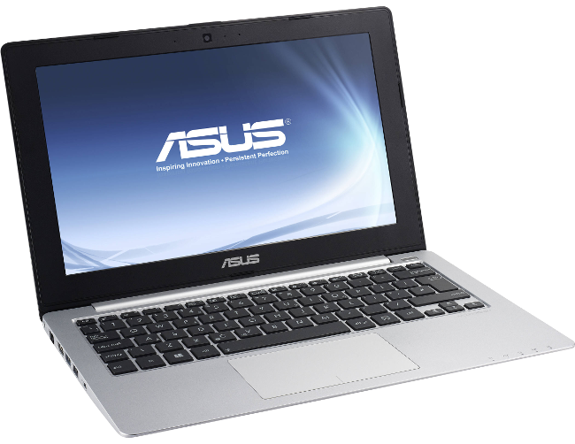
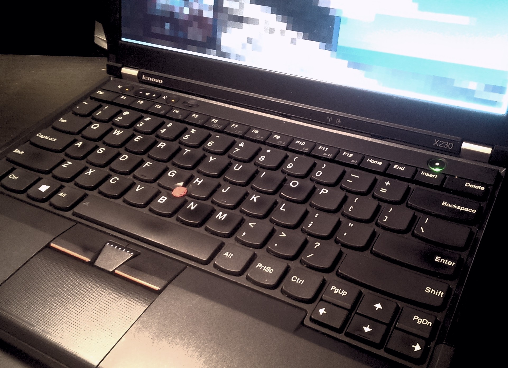

Introducing Kadabra - My New, Used x230
As I start to do more with a computer on the go, the netbooks I previously used just are not cutting it anymore. They were great for minimal use, but couldn't run VMs, over-heated, and didn't have great battery life. Now that I am going to libraries and other locations to work on personal and open source projects, I really needed a better mobile pc setup.
Other Considerations
I had been keeping an eye open for a new mobile computer for well over a year to find out what is out there. I mostly looked sub $300 ubuntu laptops like the Asus 11" celeron (x201e) I got in college. I don't need much HD space on my portable computer, because I usually use a minimal OS, and only have my projects (which are git controlled), and sometimes a little bit of music. Even with dropping my requirements to computers with very tiny HDs (often < 60GB), none of the options seemed all that impressive. They usually had Celeron processors and little ram. Even worse, they were not easily expandable. I also briefly entertained the idea of putting Linux on a chrome book, but they had the same issues that all the other sub $300 options had.
Used Thinkpads
When I intensified my search, I started to consider other options. There is one alternative that is very popular among Linux users, but I always seem to forget about it when looking for a new device. That option of course, is buying a used Thinkpad and installing Linux on it. This appeared to be an ideal time to try it out. I don't mind if there is a scratch or two on a cheap device. This is my portable computer after all, so I'm sure a shinny new device wouldn't stay pristine for long anyway. So, I started researching used Thinkpads and loved how much you could get for the money. There were i5 devices with an acceptable bit of ram and "okay" hard drives for under my $300 price point. Better yet, the Thinkpads seemed easy to upgrade . So, even if the device had a bad battery, or needed a RAM/HD upgrade, I could could do it.
I eventually narrowed my search down to the X230 or T430s. That year's model seemed like the perfect mix of still being relatively new, while also being old enough that many business had started to replace them, flooding the market and driving the cost down. They also didn't have the terrible track pad that the x240 and T440s had (without buttons). I eventually decided on the x230 because the main use of this laptop would be portability.
This Particular Thinkpad x230 ...
I found my used x230 on Amazon, for about $185. The vendor an acceptable rating, and the specs were good for the price:- Intel i5-3320M
- 4 GB RAM
- 12.5" 1366x768 HD LED Display
- 320 GB HHD
The listing also said that it came with a "used 6-cell battery". So I planned from the beginning to have it replaced. Sure enough, when the laptop arrived, the battery was completely dead. If I unplugged the laptop, it would shutdown. So, I ordered a 9-cell battery online to replace it. I added a 4GB stick of RAM that I took from an older laptop, and replaced the slow HHD (with Windows pre-installed), with a cheap 120GB SSD I had lying around. After installing Korora 24 on the new SSD, I had a nice, portable computer that only cost me about $200 (plus some spare parts). As advertised, swapping the battery, adding RAM, and replacing the HD were super simple and accessible.
What I like about it
- Track point - I love track points. Using other laptops withjust track-pads is really frustrating now. I completely understand why people are so crazy about them.
- Keyboard - The keyboard really is great. I feels solid and not like other laptop keyboards. It gives good feedback and is very nice to type on. I know many people hate this model because keyboard layout changed from the older models like the x220, but I still think the x230 has a better keyboard than most laptops.
- Physical buttons - The x230 has a physical mute, volume control, and mic buttons. This is a feature I enjoy much more than I thought I would.
- Upgradability - As I have already mentioned, it is very easy to upgrade the x230. Right when I got it, I replaced the HHD with an SSD and added another stick of RAM in under five minutes. In fact, I have swapped the SSD out temporarily witha second drive several times now to try out different distros on the hardware. It is just so easy to do.
- Feel - I really like how this laptop feels. I've already mentioned that I enjoy the solidness of the keyboard, but I also love the exterior texture of the case. It has a slight rubbery feel to it that makes it easy to hold.
- Bang for your buck - Getting a used thinkpad really is a great deal. Even counting the minor upgrades I installed, I was able to get an actual computer for around the same price as the netbook alternatives I was looking at.
- Size - This is my mobile computer, so I need it to be small. While it isn't as thin as my wife's macbook air, it is still very portable. I actually don't mind it being a little bit thicker, as I find it to be the perfect size to hold and carry around. It is a similar size to a few of my programming books and slides into my backpack very easily.
What I don't like
- Has a little bit of flex - While the laptop overall feels pretty solid, the screen does have a bit of flex when pressed.
- Resolution - I really hate 1366x768 on laptops. I don't need 1920x1080, which would be very tiny on a 12.5" screen. 1600x900 however...
- Track pad (but honestly who cares) - The track-pad isn't great. In fact, it can be downright annoying. The bottom of the track-pad curves around the edge of computer, which looks nice, but rubs against my stomach when I am working with the laptop on my lap. This causes the cursor to fly around and do everything but what I want it to do. This would be a much bigger issue on other laptops, but with how much I use the track point, I really don't care. I usually just disable the track-pad all together.
- Speakers aren't great (but again, not a bit deal) - The speakers are very quiet and don't sound very good. This isn't a huge deal for me because being my mobile computer, I am using headphones 99% of the time. Still, it would be nice if when I occasionally share a video with someone they could actually hear it.
Conclusions
 I have had Kadabra for several months now and still love it. I use it at work daily (to listen tomusic, podcasts, and to have a linux computer available to me at all times in a Windows office). It is a perfect mix of being portable while still having enough power to accomplish whatever I want to work on. I still prefer to vote with my wallet by purchasing from a vendors like System76 when possible, but buying used business hardware, such as thinkpads, is a very affordable alternative. I have no regrets buying my used x230. It is infinitely better than my other options at that price point.
I have had Kadabra for several months now and still love it. I use it at work daily (to listen tomusic, podcasts, and to have a linux computer available to me at all times in a Windows office). It is a perfect mix of being portable while still having enough power to accomplish whatever I want to work on. I still prefer to vote with my wallet by purchasing from a vendors like System76 when possible, but buying used business hardware, such as thinkpads, is a very affordable alternative. I have no regrets buying my used x230. It is infinitely better than my other options at that price point.